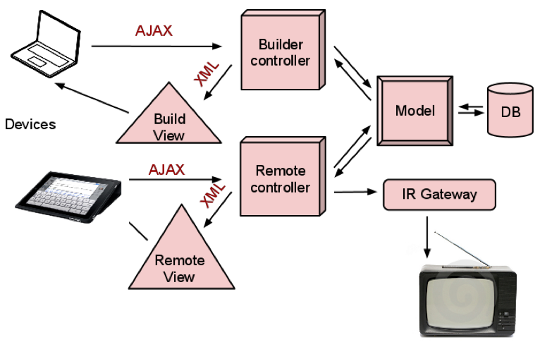

People have too many remotes for too many devices.
Opportunity for innovation
Follows the MVC framework with modifications:
Implemented Remote Builder using HTML and Javascript
Model and database design, database setup.
Communication between model and controller. Image loading from database
Implemented Account controllers and models
Builder and Accounts integration.
open source, popular framework
open source, relational database management system.
Asynchronous Javascript and XML
MySQL configuration headaches
Grid, proper CSS, small bugs
jQuery UI is still in development
Communicating button positions with the Builder
/
#